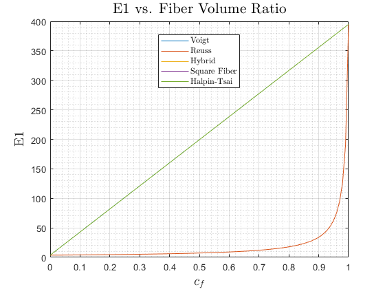
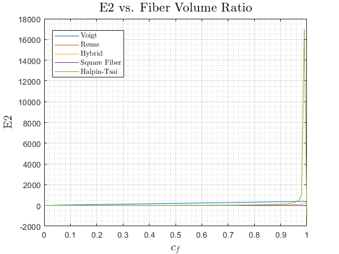
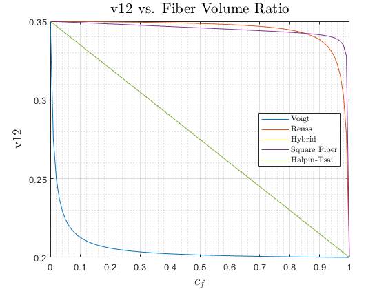
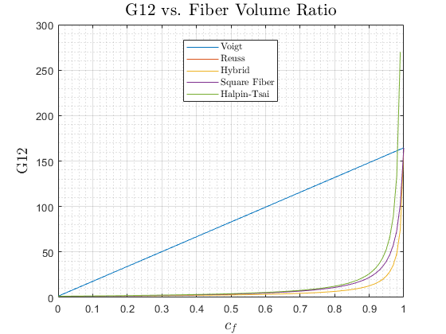

Contents
clear; close all; clc
Contstituent Material Properties
Ef = 395;
vf = .2;
Em = 3.7;
vm = .35;
Main Function Body
cf = linspace(0, 1, 100);
cm = 1 - cf;
models = {'Voigt', 'Reuss', 'Hybrid', 'Square Fiber', 'Halpin-Tsai'};
functions = {@voigt, @reuss, @hybrid, @SFM, @halpinTsai};
for ii = 1:length(models)
properties(ii).model = models{ii};
[properties(ii).E1, ...
properties(ii).E2, ...
properties(ii).v12, ...
properties(ii).G12] = functions{ii}(Ef, vf, cf, Em, vm , cm);
end
Plots
fn = fieldnames(properties);
for ii = 1:length(fn) - 1
for jj = 1: length(models)
figure(ii)
plot(cf, properties(jj).(fn{ii + 1}), 'DisplayName', ...
properties(jj).model)
hold on
grid on
grid minor
titleText = [fn{ii + 1}, ' vs. Fiber Volume Ratio'];
title(titleText, 'fontsize', ...
16, 'Interpreter', 'Latex')
xlabel('$c_f$', 'fontsize', 14, 'Interpreter', 'Latex')
ylabel(fn{ii + 1},...
'fontsize', 14, 'Interpreter', 'Latex')
legend('location', 'best', 'Interpreter', 'Latex')
end
end
   
Voigt model
function [E1, E2, v12, G12] = voigt(Ef, vf, cf, Em, vm , cm)
[E1, E2, G12, v12] = deal(zeros(1, length(cf)));
G = @(E, v) E / (2 * (1 + v));
Gf = G(Ef, vf);
Gm = G(Em, vm);
C.m = [Em / (1 - (vm ^ 2)), (vm * Em) / (1 - (vm ^ 2)), ...
0; (vm * Em) / (1 - (vm ^ 2)), Em / (1 - (vm ^ 2)), ...
0; 0, 0, Gm];
C.f = [Ef / (1 - (vf ^ 2)), (vf * Ef) / (1 - (vf ^ 2)), ...
0; (vf * Ef) / (1 - (vf ^ 2)), Ef / (1 - (vf ^ 2)), ...
0; 0, 0, Gf];
for jj = 1:length(cf)
C.v = (cf(jj) .* C.f) + (cm(jj) .* C.m);
S.v = inv(C.v);
E1(jj) = 1 / S.v(1, 1);
E2(jj) = 1 / S.v(2, 2);
v12(jj) = -S.v(2, 1) * E1(jj);
G12(jj) = 1 /S.v(3, 3);
end
end
Reuss Model
function [E1, E2, v12, G12] = reuss(Ef, vf, cf, Em, vm , cm)
[E1, E2, G12, v12] = deal(zeros(1, length(cf)));
G = @(E, v) E / (2 * (1 + v));
Gf = G(Ef, vf);
Gm = G(Em, vm);
S.m = [1 / Em, -vm / Em, 0; ...
-vm / Em, 1 / Em, 0; ...
0, 0, 1 / Gm];
S.f = [1 / Ef, -vf / Ef, 0; ...
-vf / Ef, 1 / Ef, 0; ...
0, 0, 1 / Gf];
for jj = 1:length(cf)
S.r = (cf(jj) .* S.f) + (cm(jj) .* S.m);
E1(jj) = 1 / S.r(1, 1);
E2(jj) = 1 / S.r(2, 2);
v12(jj) = -S.r(1, 2) * E1(jj);
G12(jj) = 1 / S.r(3, 3);
end
end
Hybrid model
function [E1, E2, v12, G12] = hybrid(Ef, vf, cf, Em, vm , cm)
[E1, E2, G12, v12] = deal(zeros(1, length(cf)));
for jj = 1:length(cf)
E1(jj) = (cf(jj) * Ef) + (cm(jj) * Em);
E2(jj) = 1 / (((cf(jj) / Ef) + (cm(jj) / Em)) - ...
(((cf(jj) * cm(jj)) / (Ef * Em)) * ...
((((vf * Em) - (vm * Em)) ^ 2) / ...
((cm(jj) * Em) + (cf(jj) * Ef)))));
G = @(E, v) E / (2 * (1 + v));
Gf = G(Ef, vf);
Gm = G(Em, vm);
G12(jj) = 1 / ((cf(jj) * (1 / Gf)) + (cm(jj) * (1 / Gm)));
v12(jj) = (cf(jj) * vf) + (cm(jj) * vm);
end
end
Square Fiber Model
function [E1, E2, v12, G12] = SFM(Ef, vf, cf, Em, vm , ~)
[E1, E2, G12, v12] = deal(zeros(1, length(cf)));
for jj = 1:length(cf)
cA = sqrt(cf(jj));
cB = 1 - cA;
G = @(E, v) E / (2 * (1 + v));
Gm = G(Em, vm);
Gf = G(Ef, vf);
Q.m = [Em / (1 - (vm ^ 2)), (vm * Em) / (1 - (vm ^ 2)), ...
0; (vm * Em) / (1 - (vm ^ 2)), Em / (1 - (vm ^ 2)), ...
0; 0, 0, Gm];
hybrid.E1 = (cA * Ef) + (cB * Em);
hybrid.v12 = (cA * vf) + (cB * vm);
hybrid.G12 = 1 / ((cA / Gf) + (cB / Gm));
hybrid.E2 = (cA / Ef) + ((cB / Em) * (1 - (vm ^ 2)));
hybrid.v21 = (hybrid.v12 * hybrid.E2) / hybrid.E1;
Q.h = [hybrid.E1 / (1 - (hybrid.v12 * hybrid.v21)), ...
(hybrid.v12 * hybrid.E2) / (1 - (hybrid.v12 * hybrid.v21)), ...
0; (hybrid.v12 * hybrid.E2) / ...
(1 - (hybrid.v12 * hybrid.v21)), hybrid.E2 / ...
(1 - (hybrid.v12 * hybrid.v21)), 0; 0, 0, hybrid.G12];
Q.SFM = (cA .* Q.h) + (cB .* Q.m);
E1(jj) = ((Q.SFM(1, 1) * Q.SFM(2, 2)) - (Q.SFM(1, 2) ^ 2)) / ...
Q.SFM(2, 2);
E2(jj) = ((Q.SFM(1, 1) * Q.SFM(2, 2)) - (Q.SFM(1, 2) ^ 2)) / ...
Q.SFM(1, 1);
G12(jj) = Q.SFM(3, 3);
v12(jj) = Q.SFM(1, 2) / Q.SFM(2, 2);
end
end
Halpin-Tsai Model
function [E1, E2, v12, G12] = halpinTsai(Ef, vf, cf, Em, vm , cm)
[E1, E2, G12, v12] = deal(zeros(1, length(cf)));
G = @(E, v) E / (2 * (1 + v));
Gm = G(Em, vm);
Gf = G(Ef, vf);
eta = @(Pf, Pm, ep) (Pf - Pm) / (Pf - (ep * Pm));
for ii = 1:length(cf)
E1(ii) = (cf(ii) * Ef) + (cm(ii) * Em);
estimatedParameter.E2 = 2;
etaE2 = eta(Ef, Em, estimatedParameter.E2);
E2(ii) = (Em * (1 + (estimatedParameter.E2 * etaE2 * ...
cf(ii)))) / (1 - (etaE2 * cf(ii)));
v12(ii) = (cf(ii) * vf) + (cm(ii) * vm);
estimatedParameter.G12 = 1;
etaG12 = eta(Gf, Gm, estimatedParameter.G12);
G12(ii) = (Gm * (1 + (estimatedParameter.G12 * etaG12 .* ...
cf(ii)))) /(1 - (etaG12 * cf(ii)));
end
end